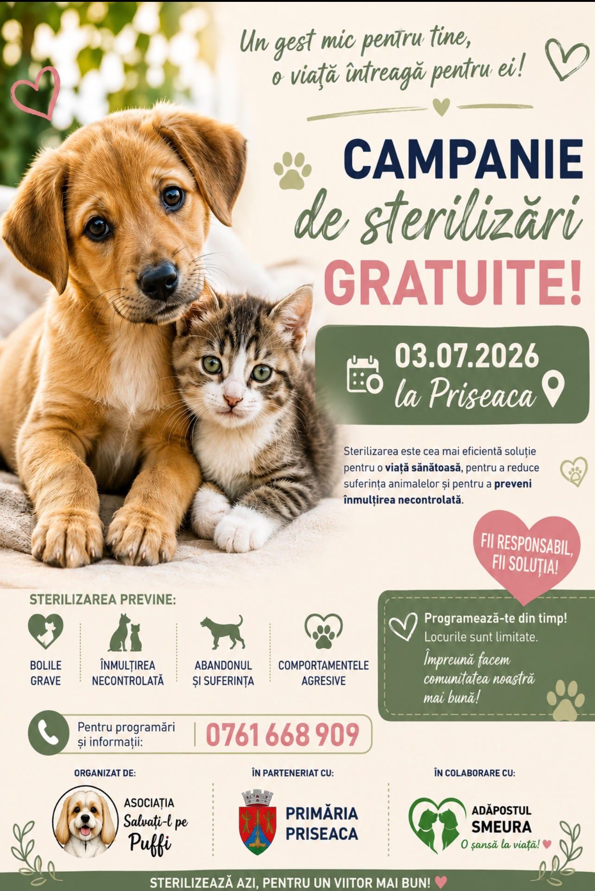
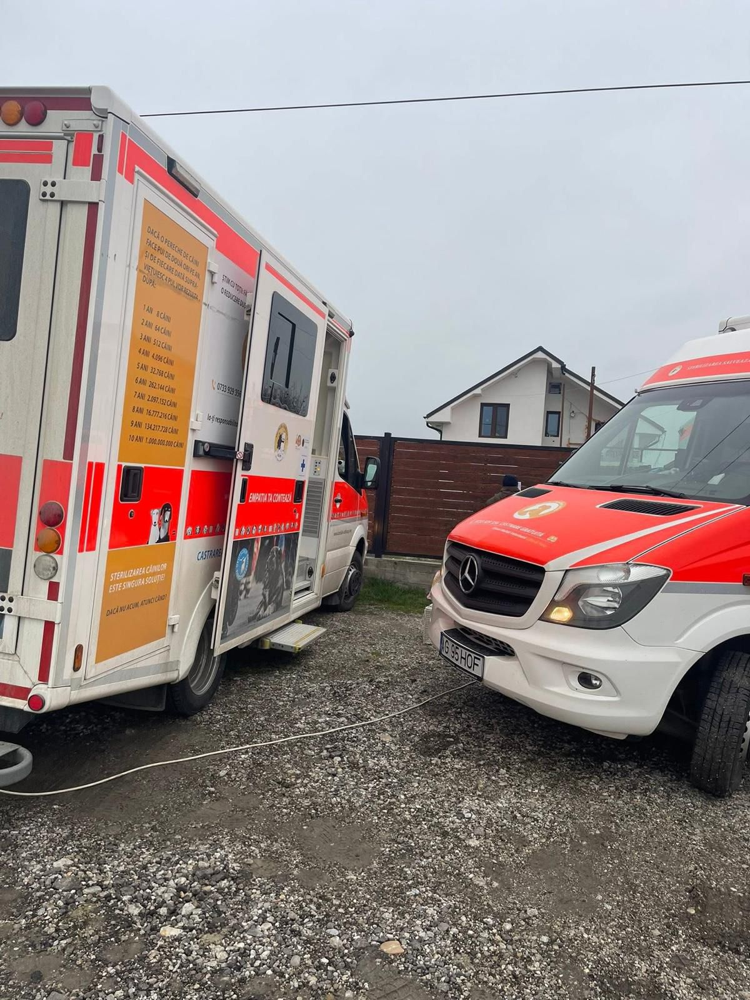
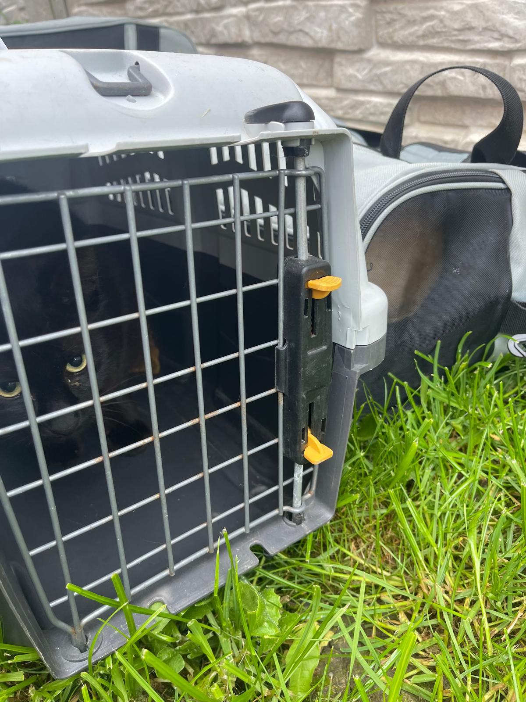
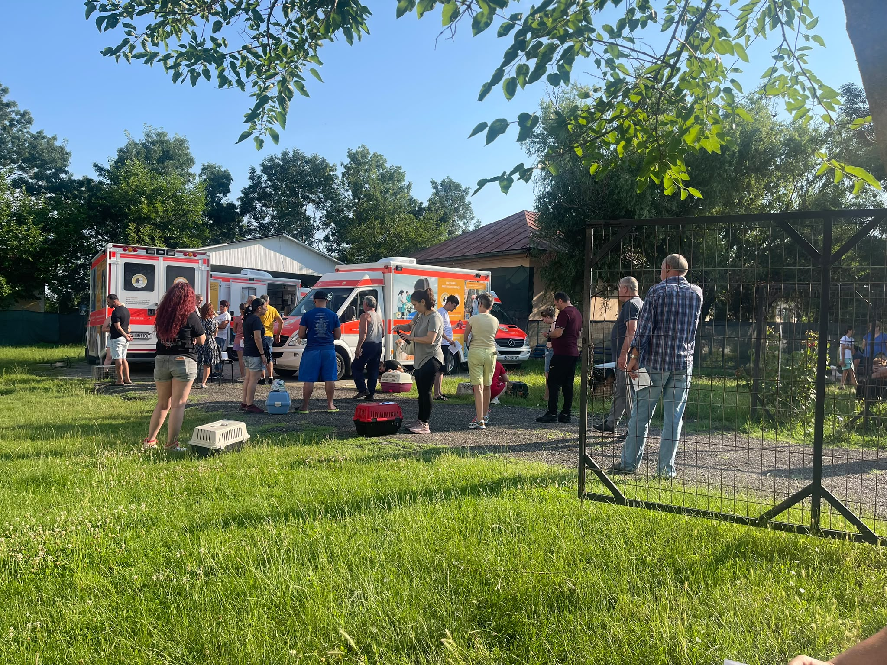
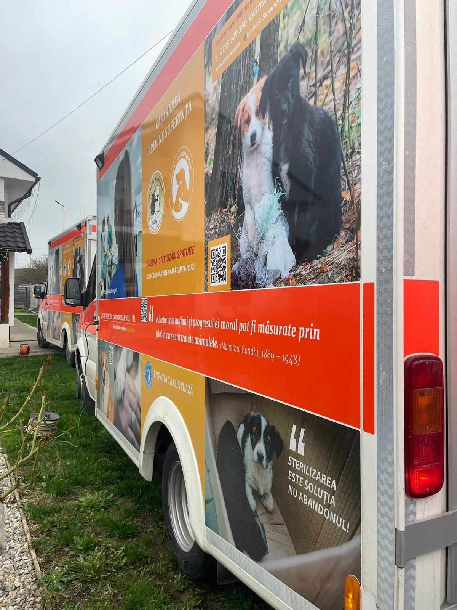
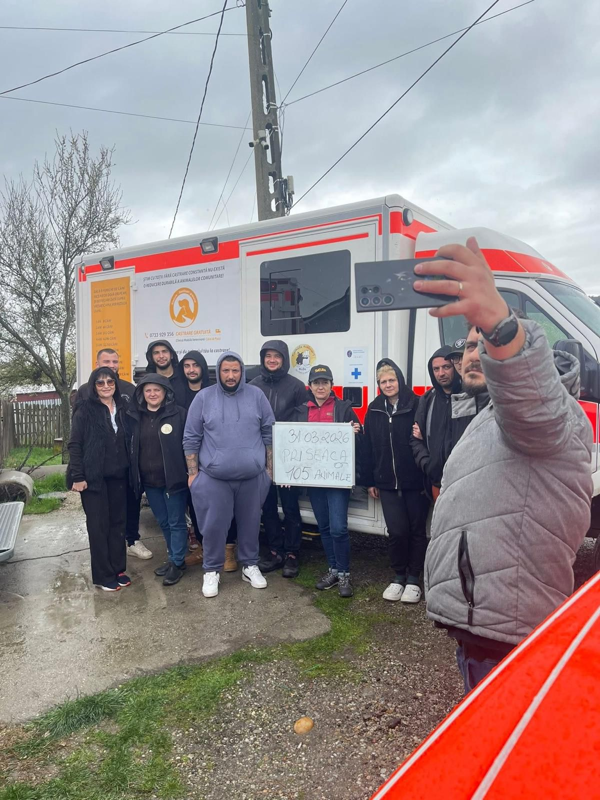
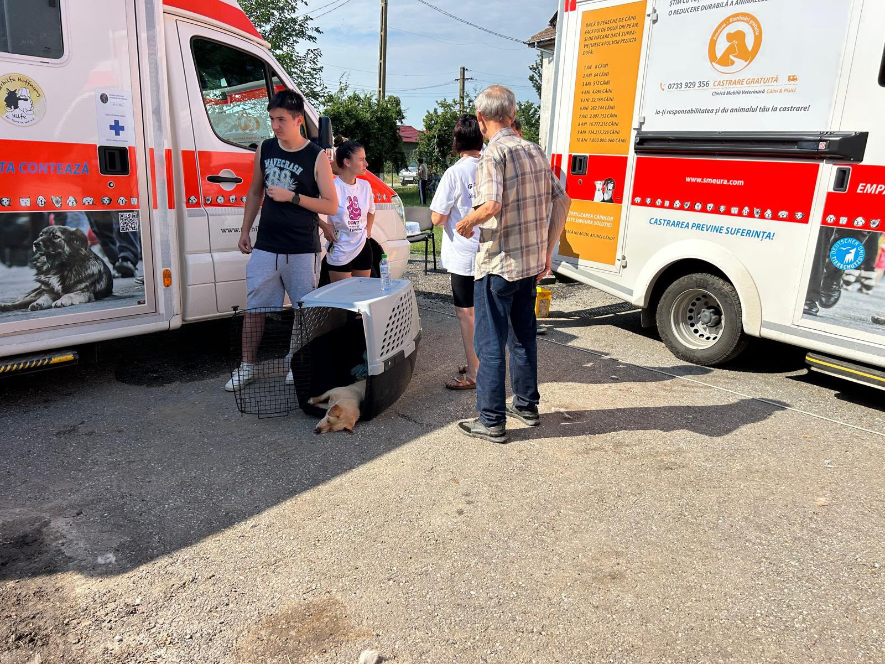
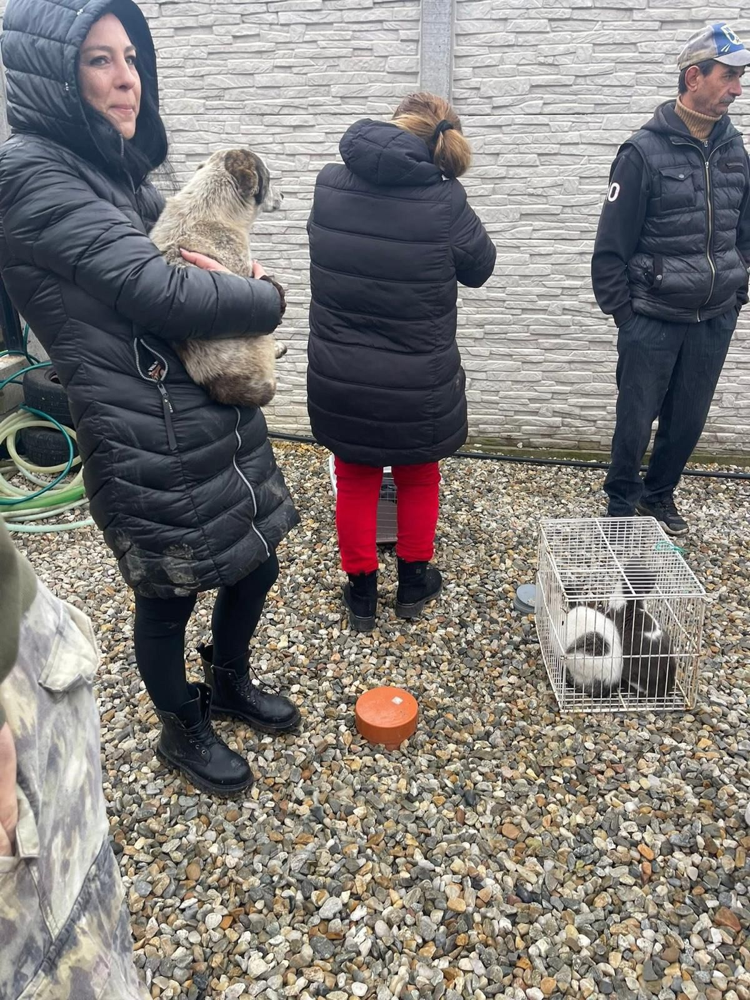

Prevenția este singura soluție reală pentru stoparea abandonului. Împreună, putem oferi o viață mai bună animalelor fără stăpân.

Data: 03 Iulie 2026
Locația: Comuna Priseaca, Olt
Un gest mic pentru tine, o viață întreagă pentru ei!
Asociația Salvați-l pe Puffi, în parteneriat cu Primăria Priseaca și Adăpostul Smeura, organizează o nouă campanie de sterilizare. Sterilizarea este cea mai eficientă soluție pentru o viață sănătoasă și pentru a preveni înmulțirea necontrolată.
Programează-te din timp! Locurile sunt limitate.
Sună acum: 0761 668 909Singura metodă umană și eficientă de a reduce numărul animalelor de pe străzi este controlul reproducerii. O singură femelă nesterilizată poate genera, direct și indirect, mii de pui nedoriți în doar câțiva ani.
Prin campaniile noastre, ne dorim să sprijinim comunitatea și să oferim acces la servicii medicale de specialitate celor care nu își permit costurile acestor intervenții.

Imaginile publicate pe această pagină reprezintă realizările de la a 13-a campanie de sterilizare organizată alături de echipa de la Adăpostul Smeura Argeș, cărora le mulțumim din suflet pentru sprijinul acordat sufletelor fără stăpân.





